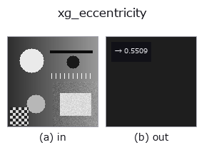

xldgeom op• データ種: contour → feature
• 呼び出し: fullseye.apply(img, "xg_eccentricity", a=0.5, b=0.5) (2-D は 1 画像 + 2 スカラつまみ a,b∈[0,1] のモデル)
• HALCON 相当: eccentricity_points_xld(意味・パラメータは HALCON リファレンスが参考になる)

*図は合成の入力 128×128 で実際に走らせた出力。左が入力、右が出力。点群は上から見た散布(明るさ = z)、1-D 列は折れ線、体積は z 方向の最大値投影、動画は中央フレーム、複素画像は振幅、絵にならない返り値は値そのもの。*
*つまみ a は出力を変えない(実測: 0.1 / 0.5 / 0.9 で同一)。*
*つまみ b は出力を変えない(実測: 0.1 / 0.5 / 0.9 で同一)。*
段階(前置きの op → この op。左から順):
▸ xg_eccentricity: stages (docs site)
点群の共分散からの離心率 sqrt(1 - λ_min/λ_max)。
輪郭辞書 `{"shape", "cs"}` の全輪郭の点を 1 つの点集合にまとめ、その
(row, col) 座標の母共分散行列の固有値 `λ_min <= λ_max` から離心率
`e = sqrt(1 - λ_min/λ_max)` を返す。閉輪郭の重複した終点(先頭と同じ点)は
数えない。`a, b` は未使用。
返り値は `numpy.float64` で [0, 1]。真円・正方形など等方な点配置で 0、
一直線上の点(`λ_min = 0)で 1。点が 2 個未満、または λ_max <= 1e-12`
(全点同一)なら 0.0。輪郭が複数あればそれらをまとめた分布の離心率になり、
個々の輪郭の形ではなく配置の広がりも混ざる(輪郭ごとに評価したいなら先に
`select_contours_xld` などで 1 本に絞る)。輪郭点の密度に依存する(点が
密な部分が重く効く)点は面積ベースの指標と異なる。軸比そのものは
`xg_elliptic_axis、主軸の向きは xg_orientation`。
• サンプルデータ カタログ(DL URL / ライセンス) — 2-D は skimage.data(BSD/public)+ 合成、3-D は実データ源(Stanford/PDS 等)の DL URL。
• 演算子の来歴・参考文献 — この op 族の元になった研究/手法の出典。
• アルゴリズムの正典(著者・年)と用途は上記ファミリ使い方ガイドに記載。
下のプログラムは実際に走ることを確かめてある(図と同じ入力)。Studio のヘルプではこのブロックがボタンになり、その場で読み込んで実行できる。
threshold 0.50 0.50 sk_find_contours 0.50 0.50 xg_eccentricity 0.50 0.50
▸ Load this pipeline · Load & run
• gallery2d_geometry — py -3.11 examples/gallery2d_geometry.py
feature を入力に取れる)xldgeom)xg_moments · xg_area_center · xg_orientation · xg_elliptic_axis · xg_height_width_ratio · xg_regress_contours · xg_clip_contours · xg_gen_polygons
*Provenance: ops.py — 2D operator registry. この per-op ノートは tools/opdocs.py md が自動生成(手編集しない)。*
© 2026 Kazufumi Furuse — Fullseye operator documentation. Licensed under Apache-2.0.
{kind=link}